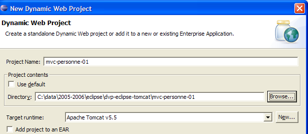
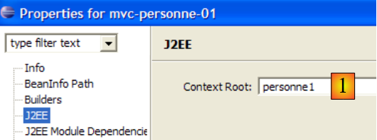
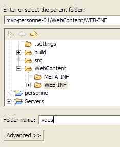
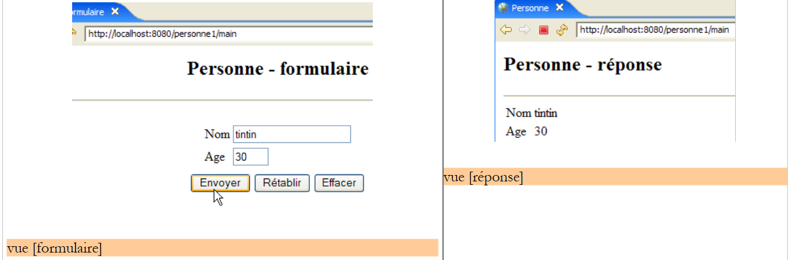
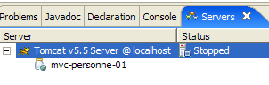
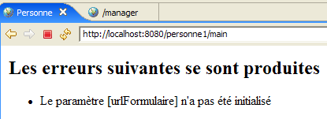

5. تطبيق ويب MVC [person] – الإصدار 1
5.1. طرق عرض التطبيق
يستخدم التطبيق النموذج الموجود في الأمثلة السابقة. الصفحة الأولى من التطبيق هي كما يلي:

سنسمي هذه الشاشة شاشة [form]. إذا كانت الإدخالات صحيحة، فسيتم عرضها في شاشة ستسمى [response]:

إذا كانت الإدخالات غير صحيحة، يتم عرض الأخطاء في عرض يسمى [errors]:

5.2. بنية التطبيق
سيكون لتطبيق الويب [person1] البنية التالية:

هذه بنية أحادية الطبقة: لا توجد طبقات [business] أو [DAO]، بل طبقة [web] فقط. [ServletPersonne] هو وحدة التحكم في التطبيق التي تتولى معالجة جميع طلبات العملاء. وللاستجابة لهذه الطلبات، يستخدم أحد العروض الثلاثة [form، response، errors].
علينا تحديد كيفية قيام وحدة التحكم [ServletPersonne] بتحديد الإجراء الذي يجب اتخاذها عند تلقي طلب من المستخدم. طلب العميل هو دفق HTTP يختلف اعتمادًا على ما إذا كان قد تم إجراؤه باستخدام أمر GET أو POST.
طلب GET
في هذه الحالة، يبدو تدفق HTTP كما يلي:
يحدد السطر 1 عنوان URL المطلوب، على سبيل المثال:
يمكن استخدام عنوان URL هذا لتحديد الإجراء المطلوب تنفيذه. يمكن استخدام طرق مختلفة:
- يحدد معلمة عنوان URL الإجراء، على سبيل المثال [/app?action=add&id=4]. هنا، تُعلم معلمة [action] وحدة التحكم بالإجراء المطلوب.
- يحدد العنصر الأخير من عنوان URL الإجراء، على سبيل المثال [/app/add?id=4]. هنا، يستخدم وحدة التحكم العنصر الأخير من عنوان URL [/add] لتحديد الإجراء الذي يجب أن تقوم به.
هناك حلول أخرى ممكنة. الحلان المذكوران أعلاه هما الأكثر شيوعًا.
طلب POST
في هذه الحالة، يبدو تدفق HTTP كما يلي:
يحدد السطر 1 عنوان URL المطلوب، على سبيل المثال:
يمكن استخدام عنوان URL هذا لتحديد الإجراء المطلوب تنفيذه، تمامًا كما هو الحال مع GET. في حالة GET، تم تضمين المعلمة [action] في عنوان URL. ويمكن أن يكون هذا هو الحال هنا أيضًا، كما في:
ومع ذلك، يمكن أيضًا تضمين المعلمة [action] في المعلمات المرسلة (السطر 15 أعلاه)، كما في:
فيما يلي، سنستخدم هذه التقنيات المختلفة لإخبار وحدة التحكم بما يجب القيام به:
- تضمين معلمة الإجراء في عنوان URL المطلوب:
- إرسال معلمة الإجراء:
- استخدم العنصر الأخير من عنوان URL كاسم الإجراء:
5.3. مشروع Eclipse
لإنشاء مشروع Eclipse [mvc-personne-01] لتطبيق الويب [personne1]، اتبع الإجراء الموضح في القسم 3.1.

لن نحتفظ بالسياق الافتراضي [mvc-personne-01]. سنختار [personne1] كما هو موضح أدناه:

والنتيجة هي كما يلي:

إذا كنت ترغب في تغيير سياق تطبيق الويب، فاستخدم الخيار [انقر بزر الماوس الأيمن على المشروع -> خصائص -> J2EE]:

أدخل السياق الجديد في [1].
سنقوم بإنشاء مجلد فرعي [vues] في مجلد [WEB-INF]: [انقر بزر الماوس الأيمن على WEB-INF -> جديد -> مجلد]:
 |  |
يبدو المشروع الجديد الآن كما يلي:

بمجرد اكتماله، سيبدو المشروع كما يلي:

- توجد وحدة التحكم [ServletPersonne] في المجلد [src]
- توجد صفحات JSP الخاصة بعروض [form، response، errors] في المجلد [WEB-INF/vues]، مما يمنع المستخدم من الوصول إليها مباشرةً، كما هو موضح في المثال التالي:

سنقوم الآن بوصف المكونات المختلفة لتطبيق الويب [/personne1]. ندعو القارئ إلى إنشائها أثناء قراءته.
5.4. تكوين تطبيق الويب [person1]
سيكون ملف web.xml لتطبيق /person1 كما يلي:
<?xml version="1.0" encoding="UTF-8"?>
<web-app id="WebApp_ID" version="2.4"
xmlns="http://java.sun.com/xml/ns/j2ee"
xmlns:xsi="http://www.w3.org/2001/XMLSchema-instance"
xsi:schemaLocation="http://java.sun.com/xml/ns/j2ee http://java.sun.com/xml/ns/j2ee/web-app_2_4.xsd">
<display-name>mvc-personne-01</display-name>
<!-- ServletPersonne -->
<servlet>
<servlet-name>personne</servlet-name>
<servlet-class>
istia.st.servlets.personne.ServletPersonne
</servlet-class>
<init-param>
<param-name>urlReponse</param-name>
<param-value>
/WEB-INF/vues/reponse.jsp
</param-value>
</init-param>
<init-param>
<param-name>urlErreurs</param-name>
<param-value>
/WEB-INF/vues/erreurs.jsp
</param-value>
</init-param>
<init-param>
<param-name>urlFormulaire</param-name>
<param-value>
/WEB-INF/vues/formulaire.jsp
</param-value>
</init-param>
</servlet>
<!-- Mapping ServletPersonne-->
<servlet-mapping>
<servlet-name>personne</servlet-name>
<url-pattern>/main</url-pattern>
</servlet-mapping>
<!-- welcome files -->
<welcome-file-list>
<welcome-file>index.jsp</welcome-file>
</welcome-file-list>
</web-app>
ماذا يقول ملف التكوين هذا؟
- الأسطر 34–37: يتم التعامل مع عنوان URL /main بواسطة السيرفلت المسمى person
- الأسطر 10-13: السيرفلت المسمى "person" هو مثيل لفئة [ServletPersonne]
- الأسطر 14–19: تعريف معلمة تكوين باسم [urlResponse]. هذا هو عنوان URL لعرض [response].
- الأسطر 20–25: تعريف معلمة تكوين باسم [urlErrors]. هذا هو عنوان URL لعرض [errors].
- الأسطر 26-31: تعريف معلمة تكوين باسم [urlForm]. هذا هو عنوان URL لعرض [form].
- السطر 40: سيكون [index.jsp] هو الصفحة الرئيسية للتطبيق.
يتم تعريف عناوين URL لصفحات JSP الخاصة بعروض [form وresponse وerrors] بواسطة معلمة تكوين لكل منها. وهذا يسمح بنقلها دون الحاجة إلى إعادة ترجمة التطبيق.
عندما يطلب المستخدم عنوان URL [/person1]، سيقوم ملف [index.jsp] بإرسال الاستجابة (ملف الصفحة الرئيسية، السطر 40). ويقع هذا الملف في جذر مجلد [WebContent]:

ومحتواه كما يلي:
<%@ page language="java" contentType="text/html; charset=ISO-8859-1"
pageEncoding="ISO-8859-1"%>
<!DOCTYPE HTML PUBLIC "-//W3C//DTD HTML 4.01 Transitional//EN">
<%
response.sendRedirect("/personne1/main");
%>
تقوم صفحة [index.jsp] ببساطة بإعادة توجيه العميل إلى عنوان URL [/person1/main]. وبالتالي، عندما يطلب المتصفح عنوان URL [/person1]، ترسل [index.jsp] إليه استجابة HTTP التالية:
- السطر 1: استجابة HTTP/1.1 لتوجيه الخادم لإعادة التوجيه إلى عنوان URL آخر
- السطر 4: عنوان URL الذي يجب أن يعيد توجيه المتصفح إليه
بعد هذا الرد، سيطلب المتصفح عنوان URL [/person1/main] وفقًا للتعليمات (السطر 4). يحدد ملف [web.xml] الخاص بتطبيق [/person1] أن وحدة التحكم [ServletPersonne] ستتولى معالجة هذا الطلب (السطران 35–36).
5.5. كود العرض
نبدأ كتابة تطبيق الويب بإنشاء طرق العرض الخاصة به. تساعد طرق العرض هذه في تحديد احتياجات المستخدم من حيث الواجهة الرسومية ويمكن اختبارها بدون وحدة التحكم.
5.5.1. عرض [form]
هذه العرض مخصص للنموذج المستخدم لإدخال الاسم والعمر:

نوع HTML | الاسم | الدور | |
<input type="text"> | txtName | أدخل الاسم | |
<input type="text"> | txtAge | أدخل العمر | |
<input type="submit"> | إرسال القيم المدخلة إلى الخادم على عنوان URL /person1/main | ||
<input type="reset"> | لاستعادة الصفحة إلى الحالة التي استقبلها بها المتصفح في البداية | ||
<input type="button"> | لمسح محتويات حقول الإدخال [1] و [2] |
يتم إنشاؤه بواسطة صفحة JSP [formulaire.jsp]. يتكون قالبه من العناصر التالية:
- [name]: اسم (سلسلة) موجود في سمات الجلسة المرتبطة بالمفتاح "name"
- [age]: عمر (سلسلة) موجود في سمات الجلسة المرتبطة بالمفتاح "age"
يتم الحصول على عرض [form] عندما يطلب المستخدم عنوان URL [/person1/main]، أي عنوان URL لوحدة التحكم [ServletPersonne]. فيما يلي كود صفحة JSP [formulaire.jsp] التي تولد عرض [form]:
<%@ page language="java" contentType="text/html; charset=ISO-8859-1"
pageEncoding="ISO-8859-1"%>
<!DOCTYPE HTML PUBLIC "-//W3C//DTD HTML 4.01 Transitional//EN">
<%
// on récupère les données du modèle
String nom=(String)request.getAttribute("nom");
String age=(String)request.getAttribute("age");
%>
<html>
<head>
<title>Personne - formulaire</title>
</head>
<body>
<center>
<h2>Personne - formulaire</h2>
<hr>
<form method="post">
<table>
<tr>
<td>Nom</td>
<td><input name="txtNom" value="<%= nom %>" type="text" size="20"></td>
</tr>
<tr>
<td>Age</td>
<td><input name="txtAge" value="<%= age %>" type="text" size="3"></td>
</tr>
<tr>
</table>
<table>
<tr>
<td><input type="submit" value="Envoyer"></td>
<td><input type="reset" value="Rétablir"></td>
<td><input type="button" value="Effacer"></td>
</tr>
</table>
<input type="hidden" name="action" value="validationFormulaire">
</form>
</center>
</body>
</html>
- السطران 6-7: تبدأ صفحة JSP باسترداد العناصر [name, age] لنموذجها من الطلب. في التشغيل العادي للتطبيق، سيقوم وحدة التحكم [ServletPersonne] بإنشاء هذا النموذج.
- الأسطر 18-38: تقوم صفحة JSP بإنشاء نموذج HTML (علامة <form>)
- السطر 18: لا تحتوي علامة <form> على سمة action لتحديد عنوان URL الذي سيقوم بمعالجة القيم المرسلة بواسطة زر [Submit] (السطر 32). سيتم بعد ذلك إرسال قيم النموذج إلى عنوان URL الذي تم الحصول على النموذج منه، أي عنوان URL لوحدة التحكم [ServletPersonne]. وبالتالي، تُستخدم وحدة التحكم هذه لإنشاء النموذج الفارغ الذي تم طلبه مبدئيًا بواسطة طلب GET ولمعالجة البيانات المدخلة التي سيتم إرسالها إليها عبر زر [Submit].
- القيم المرسلة هي قيم حقول HTML [txtName] (السطر 22) و[txtAge] (السطر 26) و[action] (السطر 37). سيسمح هذا المعامل الأخير لوحدة التحكم بمعرفة ما يتعين عليها القيام به.
- عند عرض النموذج لأول مرة، يتم تهيئة حقول الإدخال [txtName] و [txtAge] بالمتغيرات [name] (السطر 22) و [age] (السطر 26) على التوالي. تحصل هذه المتغيرات على قيمها من سمات الطلب (السطران 6-7)، والتي من المعروف أن السيرفلت يقوم بتهيئتها. وبالتالي، فإن السيرفلت هو الذي يحدد المحتوى الأولي لحقول الإدخال في النموذج.
- السطر 33: يعيد الزر [Reset] من النوع [reset] النموذج إلى الحالة التي كان عليها عندما استلمه المتصفح.
- السطر 34: زر [Clear] من النوع [reset] ليس له أي وظيفة حاليًا.
من الآن فصاعدًا، سنشير إلى هذا العرض باسم عرض [form(name, age)] عندما نريد تحديد اسم العرض ونموذجه. بالإضافة إلى ذلك، لاحظ أنه عندما ينقر المستخدم على زر [Submit]، يتم إرسال المعلمات [txtName, txtAge] إلى عنوان URL [/person1/main].
5.5.2. طريقة العرض [response]
تعرض هذه العرض القيم التي تم إدخالها في النموذج عندما تكون صالحة:

يتم إنشاؤها بواسطة صفحة JSP [reponse.jsp]. يتكون قالبها من العناصر التالية:
- [name]: اسم (سلسلة) موجود في سمات الجلسة، مرتبط بالمفتاح "name"
- [age]: عمر (سلسلة) موجود في سمات الجلسة، مرتبط بالمفتاح "age"
فيما يلي كود صفحة JSP [reponse.jsp]:
<%@ page language="java" contentType="text/html; charset=ISO-8859-1"
pageEncoding="ISO-8859-1"%>
<!DOCTYPE HTML PUBLIC "-//W3C//DTD HTML 4.01 Transitional//EN">
<%
// on récupère les données du modèle
String nom=(String)request.getAttribute("nom");
String age=(String)request.getAttribute("age");
%>
<html>
<head>
<title>Personne</title>
</head>
<body>
<h2>Personne - réponse</h2>
<hr>
<table>
<tr>
<td>Nom</td>
<td><%= nom %>
</tr>
<tr>
<td>Age</td>
<td><%= age %>
</tr>
</table>
</body>
</html>
- السطران 6-7: تبدأ صفحة JSP باسترداد عناصر [name, age] الخاصة بنموذجها من الطلب. أثناء التشغيل العادي للتطبيق، سيقوم وحدة التحكم [ServletPersonne] بإنشاء هذا النموذج.
- ثم يتم عرض عناصر النموذج [name, age] في السطرين 20 و 24
وبالتالي، نشير إلى هذا العرض باسم عرض [response(name, age)].
5.5.3. عرض [errors]
تُبلغ هذه العرضة عن أخطاء الإدخال في النموذج:

يتم إنشاؤه بواسطة صفحة JSP [errors.jsp]. يتكون نموذجه من العناصر التالية:
- [errors]: قائمة (ArrayList) برسائل الخطأ التي سيتم العثور عليها في سمات الطلب، المرتبطة بالمفتاح "errors"
فيما يلي كود صفحة JSP [errors.jsp]:
<%@ page language="java" contentType="text/html; charset=ISO-8859-1"
pageEncoding="ISO-8859-1"%>
<!DOCTYPE HTML PUBLIC "-//W3C//DTD HTML 4.01 Transitional//EN">
<%@ page import="java.util.ArrayList" %>
<%
// on récupère les données du modèle
ArrayList erreurs=(ArrayList)request.getAttribute("erreurs");
%>
<html>
<head>
<title>Personne</title>
</head>
<body>
<h2>Les erreurs suivantes se sont produites</h2>
<ul>
<%
for(int i=0;i<erreurs.size();i++){
out.println("<li>" + (String) erreurs.get(i) + "</li>\n");
}//for
%>
</ul>
</body>
</html>
- السطر 8: تبدأ صفحة JSP باسترداد عنصر [errors] من نموذجها في الطلب. يمثل هذا العنصر كائن ArrayList يحتوي على عناصر String. هذه العناصر هي رسائل خطأ. أثناء التشغيل العادي للتطبيق، سيقوم وحدة التحكم [ServletPersonne] بإنشاء هذا النموذج.
- الأسطر 18-22: تعرض قائمة رسائل الخطأ. للقيام بذلك، نحتاج إلى كتابة كود Java داخل نص HTML للصفحة. يجب أن نسعى دائمًا إلى تقليل ذلك إلى الحد الأدنى لتجنب ازدحام كود HTML. سنرى لاحقًا أن هناك حلولًا لتقليل كمية كود Java في صفحات JSP.
- السطر 4: لاحظ علامة الاستيراد للحزم المطلوبة بواسطة صفحة JSP
سنشير إلى هذا العرض باسم عرض [errors(errors)].
5.6. اختبار طرق العرض
من الممكن اختبار صحة صفحات JSP دون كتابة وحدة التحكم. ولهذا، يجب استيفاء شرطين:
- يجب أن تكون قادرًا على طلبها مباشرةً من التطبيق دون المرور عبر وحدة التحكم
- يجب أن تقوم صفحة JSP بتهيئة النموذج بنفسها، والذي عادةً ما يتم إنشاؤه بواسطة وحدة التحكم
لإجراء هذه الاختبارات، نقوم بنسخ صفحات JSP الخاصة بالطرق في المجلد [/WebContent/JSP] لمشروع Eclipse:

ثم، في مجلد JSP، يتم تعديل الصفحات على النحو التالي:
[form.jsp]:
...
<%
// -- test : on crée le modèle de la page
request.setAttribute("nom","tintin");
request.setAttribute("age","30");
%>
<%
// on récupère les données du modèle
String nom=(String)request.getAttribute("nom");
String age=(String)request.getAttribute("age");
%>
<html>
<head>
...
تمت إضافة الأسطر 3–7 لإنشاء القالب المطلوب في الأسطر 11–12.
[reponse.jsp]:
...
<%
// -- test : on crée le modèle de la page
request.setAttribute("nom","milou");
request.setAttribute("age","10");
%>
<%
// on récupère les données du modèle
String nom=(String)request.getAttribute("nom");
String age=(String)request.getAttribute("age");
%>
<html>
<head>
...
تمت إضافة الأسطر 3–7 لإنشاء القالب المطلوب للصفحة في الأسطر 11–12.
[errors.jsp]:
...
<%
// -- test : on crée le modèle de la page
ArrayList<String> erreurs1=new ArrayList<String>();
erreurs1.add("erreur1");
erreurs1.add("erreur2");
request.setAttribute("erreurs",erreurs1);
%>
<%
// on récupère les données du modèle
ArrayList erreurs=(ArrayList)request.getAttribute("erreurs");
%>
<html>
<head>
...
تمت إضافة الأسطر 3–9 لإنشاء النموذج المطلوب في السطر 13.
قم بتشغيل Tomcat إذا لم تكن قد قمت بذلك بالفعل، ثم اطلب عناوين URL التالية:
 |  |
 |
نحصل على طرق العرض المتوقعة. والآن بعد أن أصبح لدينا ثقة معقولة في صفحات JSP الخاصة بالتطبيق، يمكننا الانتقال إلى كتابة وحدة التحكم الخاصة به [ServletPersonne].
5.7. وحدة التحكم [ServletPersonne]
كل ما تبقى هو كتابة جوهر تطبيق الويب الخاص بنا: وحدة التحكم. وتتمثل مهمتها في:
- استرداد طلب العميل،
- معالجة الإجراء المطلوب من قبل العميل،
- إرسال العرض المناسب استجابةً لذلك.
ستتولى وحدة التحكم [ServletPersonne] الإجراءات التالية:
طلب | الطلب | منشأ | المعالجة |
1 | [GET /person1/hand] | عنوان URL الذي أدخله المستخدم | - إرسال عرض [نموذج] فارغ |
2 | [POST /person1/hand] مع المعلمات [txtName, txtAge، action] | انقر على [إرسال] في [form] | - تحقق من قيم المعلمات [txtName، txtAge] - إذا كانت الإجابات خاطئة، فقم بإرسال عرض [errors(errors)] - إذا كانت صحيحة، أرسل عرض [response(name,age)] |
يبدأ التطبيق عندما يطلب المستخدم عنوان URL [/person1/main]. وفقًا لملف [web.xml] الخاص بالتطبيق (انظر القسم 5.4)، تتم معالجة هذا الطلب بواسطة مثيل لفئة ServletPersonne، والتي سنقوم بوصفها الآن.
5.7.1. هيكل وحدة التحكم
فيما يلي كود وحدة التحكم [ServletPersonne]:
- الأسطر 20–22: طريقة [init] التي يتم تنفيذها عند تحميل السيرفلت لأول مرة
- الأسطر 25-28: طريقة [doGet] التي يستدعيها خادم الويب عند إرسال طلب GET إلى التطبيق
- الأسطر 42-46: طريقة [doPost] التي يستدعيها خادم الويب عند إرسال طلب POST إلى التطبيق. كما هو موضح، سيتم التعامل مع هذا أيضًا بواسطة طريقة [doGet] (السطر 45).
- الأسطر 31-33: تعالج طريقة [doInit] الإجراء رقم 1 [GET /person1/main]
- الأسطر 36-39: تعالج طريقة [doValidationFormulaire] الإجراء رقم 2 [POST /person1/main] باستخدام المعلمات المرسلة [txtName، txtAge، action].
سنقوم الآن بوصف الطرق المختلفة لوحدة التحكم
5.7.2. تهيئة وحدة التحكم
عندما يتم تحميل فئة وحدة التحكم بواسطة حاوية السيرفلت، يتم تنفيذ طريقة [init] الخاصة بها. يحدث هذا مرة واحدة فقط. بمجرد تحميلها في الذاكرة، تبقى وحدة التحكم هناك وتقوم بمعالجة الطلبات الواردة من عملاء مختلفين. يتم التعامل مع كل عميل بواسطة مؤشر ترابط تنفيذ منفصل، لذلك يتم تنفيذ طرق وحدة التحكم في وقت واحد بواسطة مؤشرات ترابط مختلفة. لاحظ أنه لهذا السبب، يجب ألا تحتوي وحدة التحكم على أي حقول يمكن لطرقها تعديلها. يجب أن تكون حقولها للقراءة فقط. يتم تهيئتها بواسطة طريقة [init]، والتي تمثل دورها الأساسي. تتميز هذه الطريقة بخاصية فريدة وهي أنها تُنفذ مرة واحدة فقط بواسطة مؤشر ترابط واحد. لذلك، لا توجد مشكلات في الوصول المتزامن إلى حقول وحدة التحكم داخل هذه الطريقة. الغرض من طريقة [init] هو تهيئة الكائنات المطلوبة من قبل تطبيق الويب، والتي سيتم مشاركتها في وضع القراءة فقط من قبل جميع مؤشرات ترابط العملاء. يمكن وضع هذه الكائنات المشتركة في موقعين:
- الحقول الخاصة بوحدة التحكم
- سياق تنفيذ التطبيق (ServletContext)
فيما يلي كود طريقة [init] لوحدة التحكم [ServletPersonne]:
- السطر 16: يتم استرداد تكوين تطبيق الويب، أي محتويات ملف [web.xml]
- الأسطر 19–29: استرداد معلمات تهيئة السيرفلت، التي تم تعريف أسمائها في المصفوفة [parameters] في السطر 9
- السطر 21: يتم استرداد قيمة المعلمة
- السطر 25: إذا كانت المعلمة مفقودة، تتم إضافة الخطأ إلى قائمة الأخطاء [initializationErrors] الفارغة في البداية (السطر 8).
- السطر 28: إذا كانت المعلمة موجودة، يتم تخزينها مع قيمتها في قاموس [params] الفارغ في البداية (السطر 10).
- الأسطر 31-35: يجب أن تكون المعلمة [urlErrors] موجودة لأنها تحدد عنوان URL لعرض [errors] القادر على عرض أي أخطاء تهيئة. إذا لم تكن موجودة، يتم إنهاء التطبيق عن طريق إلقاء استثناء [ServletException] (السطر 33).
5.7.3. طريقة [doGet]
تتعامل طريقة [doGet] مع كل من طلبات GET و POST الموجهة إلى السيرفلت، حيث إن طريقة [doPost] تعيد التوجيه إلى طريقة [doGet]. وفيما يلي شفرة هذه الطريقة:
- الأسطر 18–25: نتحقق من أن قائمة أخطاء التهيئة فارغة. إذا لم تكن كذلك، نعرض طريقة العرض [errors(initializationErrors)]، والتي ستبلغ عن الخطأ (الأخطاء).
لفهم هذا الكود، عليك أن تتذكر قالب عرض [errors]:
<%
// on récupère les données du modèle
ArrayList erreurs=(ArrayList)request.getAttribute("erreurs");
%>
تتوقع طريقة العرض [errors] وجود مفتاح باسم "errors" في الطلب. يقوم وحدة التحكم بإنشاء هذا المفتاح في السطر 20.
- السطر 28: نسترد طريقة [get] أو [post] التي استخدمها العميل لإجراء الطلب
- السطر 30: نسترد قيمة المعلمة [action] من الطلب. تذكر أنه في تطبيقنا، الطلب رقم 2 فقط [POST /person1/main] يحتوي على المعلمة [action]. في هذا الطلب، تحتوي على القيمة [validationFormulaire].
- الأسطر 31–34: إذا لم تكن المعلمة [action] موجودة، فإننا نعين لها القيمة "init". سيكون هذا هو الحال بالنسبة للطلب الأول #1 [GET /person1/main].
- الأسطر 36-40: معالجة الطلب رقم 1 [GET /person1/main].
- الأسطر 41–45: معالجة الطلب رقم 2 [POST /person1/main].
- السطر 47: إذا لم تنطبق أي من الحالتين السابقتين، فإننا نمضي قدماً كما لو كنا في الحالة رقم 1
5.7.4. طريقة [doInit]
تتعامل هذه الطريقة مع الطلب رقم 1 [GET /person1/main]. بالنسبة لهذا الطلب، يجب أن تُرجع طريقة العرض الفارغة [form(name, age)]. وفيما يلي شفرة هذه الطريقة:
- السطران 18-19: يتم عرض طريقة العرض [form]. تذكر النموذج المتوقع من قبل طريقة العرض هذه:
<%
// on récupère les données du modèle
String nom=(String)request.getAttribute("nom");
String age=(String)request.getAttribute("age");
%>
- السطران 16-17: يتم تهيئة نموذج [name, age] الخاص بعرض [form] بسلسلتين فارغتين.
5.7.5. طريقة [doValidationForm]
تقوم هذه الطريقة بمعالجة الطلب رقم 2 [POST /person1/main]، حيث المعلمات المرسلة هي [action، txtName، txtAge]. وفيما يلي شفرة هذه الطريقة:
- السطران 16-17: يتم استرداد قيم المعلمتين "txtNom" و"txtAge" من طلب العميل.
- السطور 19-26: يتم التحقق من صحة هذين المعلمتين
- الأسطر 28-33: إذا كانت أي من المتغيرات غير صحيحة، يتم عرض عرض [errors(callErrors)]. تذكر القالب الخاص بهذا العرض:
<%
// on récupère les données du modèle
ArrayList erreurs=(ArrayList)request.getAttribute("erreurs");
%>
- الأسطر 35-38: إذا كانت المعلمتان المسترجعتان "txtNom" و"txtAge" تحتويان على قيم صالحة، يتم عرض عرض [response(name, age)]. تذكر قالب عرض [response]:
<%
// on récupère les données du modèle
String nom=(String)request.getAttribute("nom");
String age=(String)request.getAttribute("age");
%>
5.8. الاختبارات
دعونا نضيف مشروع [mvc-personne-01] إلى تطبيقات Tomcat باتباع الإجراء الموضح في القسم 3.3:

ابدأ تشغيل Tomcat. بمجرد الانتهاء من ذلك، يمكننا استئناف الاختبارات الموضحة كأمثلة في القسم 5.1. يمكننا إضافة المزيد من الاختبارات. على سبيل المثال، يمكننا إزالة أحد معلمات التكوين urlXXX من web.xml ومشاهدة النتيجة. كما هو موضح أدناه، تم تعليق أحد المعلمات في [web.xml]:
<!--
<init-param>
<param-name>urlFormulaire</param-name>
<param-value>
/WEB-INF/vues/formulaire.jsp
</param-value>
</init-param>
-->
نقوم بتشغيل أو إعادة تشغيل Tomcat ونطلب عنوان URL [http://localhost:8080/personne1/main]. نحصل على الاستجابة التالية:
